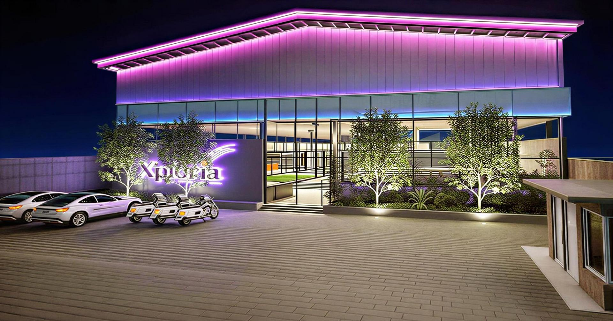
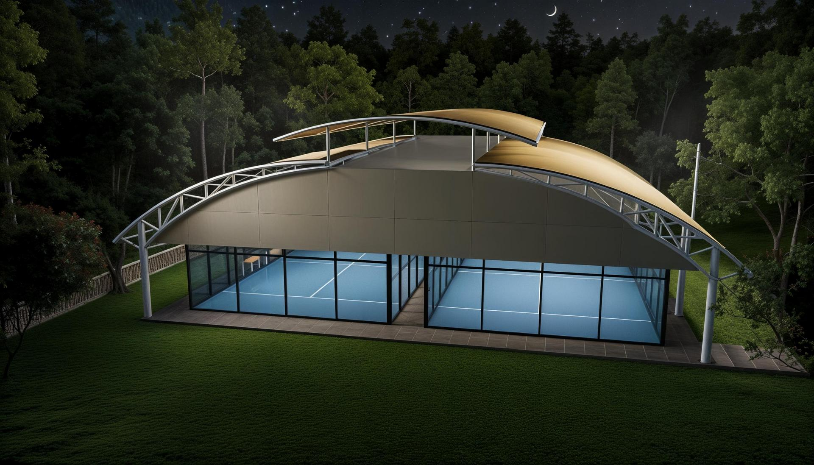
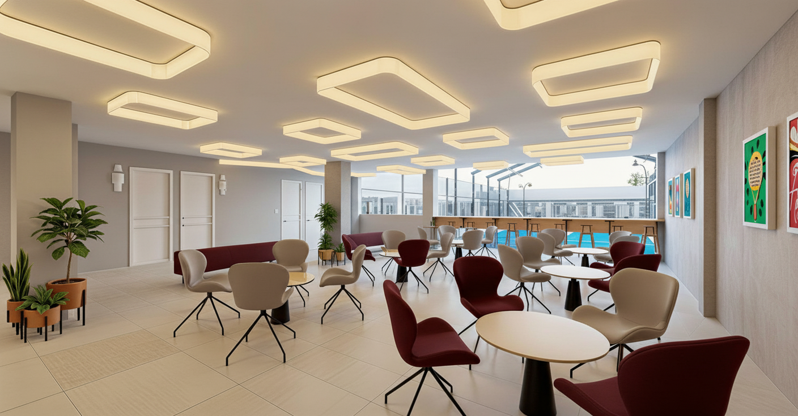
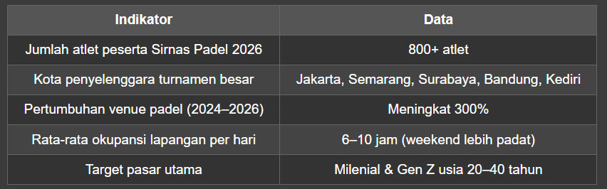
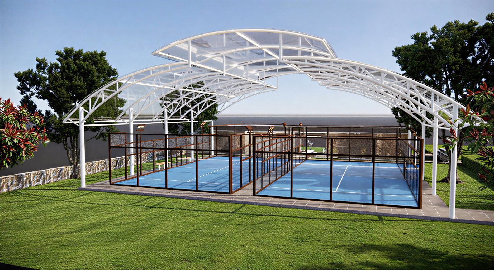

Solusi Lengkap untuk Bisnis Lapangan Padel di Indonesia
Oleh: Padelkultura – Spesialis Perencanaan & Desain Lapangan Padel Profesional
📌 Pendahuluan: Mengapa Padel Menjadi Olahraga Paling Cepat Berkembang di Indonesia?
Dalam beberapa tahun terakhir, olahraga padel telah mengalami pertumbuhan yang sangat pesat di Indonesia. Turnamen berskala nasional seperti Blibli Match Series 2026 yang merambah tiga kota besar, serta Sirnas Padel 2026 di Semarang yang diikuti lebih dari 800 atlet—menjadi bukti nyata bahwa padel bukan lagi sekadar olahraga asing, melainkan telah menjadi gaya hidup baru masyarakat urban di Indonesia.
Namun, di balik euforia ini, ada satu tantangan besar yang dihadapi para pelaku bisnis dan investor: bagaimana membangun lapangan padel yang sesuai standar internasional, estetis, dan fungsional?
Jawabannya ada pada jasa arsitek perencanaan lapangan padel yang profesional dan berpengalaman. Padelkultura hadir sebagai solusi terdepan untuk membantu Anda—baik dari segi perencanaan arsitektur lapangan padel hingga interior design yang mendukung kenyamanan pemain dan pengunjung.

🎯 Apa Itu Jasa Arsitek Perencanaan Lapangan Padel?
Arsitek lapangan padel bukanlah arsitek bangunan biasa. Mereka adalah tenaga ahli yang memahami secara mendalam:
- Dimensi standar lapangan padel internasional (10m x 20m sesuai regulasi FIP – Federación Internacional de Pádel)
- Material dinding kaca dan mesh yang tepat untuk pantulan bola optimal
- Sistem pencahayaan yang sesuai standar turnamen
- Drainase dan struktur lantai yang anti-selip dan nyaman
- Tata letak (layout) yang memaksimalkan ruang dan sirkulasi pemain
Padelkultura menyediakan jasa arsitek perencanaan lapangan padel yang mencakup seluruh kebutuhan tersebut, mulai dari konsultasi awal hingga pengawasan konstruksi.
🏗️ Mengapa Harus Menggunakan Jasa Arsitek Profesional untuk Lapangan Padel?
Banyak investor yang menganggap remeh tahap perencanaan. Padahal, kesalahan desain di awal bisa menyebabkan kerugian besar di kemudian hari. Berikut alasan kenapa Anda perlu jasa arsitek lapangan padel dari Padelkultura:
1. ✅ Standarisasi Ukuran dan Material
Lapangan padel memiliki standar yang ketat. Arsitek padel profesional dari Padelkultura memastikan setiap dimensi, sudut, dan material sesuai dengan regulasi FIP sehingga lapangan Anda bisa digunakan untuk turnamen resmi.
2. ✅ Optimalisasi Lahan
Setiap lokasi memiliki karakteristik berbeda. Tim arsitek perencanaan lapangan padel kami mampu menganalisis lahan secara detail—baik itu di dalam gedung (indoor), outdoor, rooftop, maupun lahan terbatas—sehingga hasil akhirnya maksimal.
3. ✅ Integrasi dengan Interior Design
Lapangan padel yang sukses bukan hanya soal arena bermain. Area lounge, ruang ganti, kafe, hingga toilet harus dirancang dengan konsep interior design modern agar pengunjung betah berlama-lama. Padelkultura menyediakan solusi satu atap (one-stop solution) untuk arsitektur lapangan dan interior pendukungnya.
4. ✅ Efisiensi Biaya Jangka Panjang
Dengan perencanaan matang dari jasa arsitek lapangan padel, Anda bisa menghindari pembongkaran ulang dan perbaikan mahal akibat kesalahan teknis di awal.
🎨 Interior Design untuk Klub dan Arena Padel: Lebih dari Sekadar Estetika
Padel adalah olahraga yang sangat sosial. Pemain dan pengunjung biasanya menghabiskan waktu 1–3 jam di venue, termasuk sebelum dan sesudah bermain. Inilah mengapa interior design menjadi faktor kunci dalam retensi pelanggan.

Padelkultura tidak hanya merancang lapangan, tetapi juga menyediakan jasa interior design khusus untuk venue padel, meliputi:
🛋️ 1. Desain Area Lounge & Sosialisasi
- Kursi dan sofa ergonomis dengan tema modern minimalis
- Pencahayaan hangat untuk relaksasi
- Meja dan area nongkrong yang mendukung interaksi sosial
🚿 2. Ruang Ganti & Toilet Premium
- Desain yang bersih, modern, dan mudah dirawat
- Sistem sirkulasi udara yang baik
- Loker dengan sistem keamanan terintegrasi
☕ 3. Kafe atau Mini Bar
- Konsep terbuka (open kitchen) atau semi-terbuka
- Dekorasi dengan aksen olahraga dan warna khas padel
- Area duduk yang nyaman dengan pemandangan langsung ke lapangan
🖼️ 4. Wall Art & Branding
- Penggunaan material akrilik, neon sign, atau mural bertema padel
- Integrasi logo dan identitas brand Anda
- Spot foto Instagramable untuk meningkatkan viral marketing
💡 5. Pencahayaan Interior
- Kombinasi lampu utama, lampu aksen, dan lampu darurat
- Sistem smart lighting yang bisa diatur untuk berbagai suasana (siang/malam/event)

🧩 Layanan Lengkap Padelkultura: Dari Konsep hingga Realisasi
Berikut adalah paket layanan yang ditawarkan oleh Padelkultura sebagai konsultan dan kontraktor lapangan padel terpercaya:
📋 A. Konsultasi Awal & Studi Kelayakan (Feasibility Study)
- Analisis lokasi dan lahan
- Analisis pasar dan target pengguna
- Estimasi biaya konstruksi (RAB)
- Proyeksi pendapatan (ROI analysis)
✏️ B. Desain Arsitektur Lapangan Padel
- Gambar kerja (DED – Detailed Engineering Design)
- 3D visualisasi lapangan
- Perhitungan struktur, drainase, dan utilitas
🔨 C. Konstruksi & Pembangunan Lapangan
- Pengerjaan struktur baja, kaca tempered, dan mesh
- Pemasangan lantai sintetis khusus padel
- Instalasi sistem pencahayaan LED standar turnamen
🎨 D. Interior Design & Fit-out
- Desain interior ruang publik, lounge, dan area servis
- Pengadaan furnitur custom
- Finishing dan dekorasi
🔧 E. Perawatan & Maintenance
- Servis berkala lapangan dan peralatan
- Pengecekan standar keamanan
- Konsultasi operasional venue
📊 Data & Fakta: Potensi Bisnis Lapangan Padel di Indonesia 2026

Sumber: Data industri dan pemberitaan terkini (2026)
Artinya, investasi lapangan padel kini bukan lagi sekadar hobi, melainkan peluang bisnis yang sangat menguntungkan. Dan kunci suksesnya ada pada perencanaan arsitektur yang tepat.
🏆 Kenapa Harus Padelkultura?
Ada banyak penyedia jasa di luar sana, tapi Padelkultura memiliki beberapa keunggulan kompetitif yang tidak dimiliki oleh yang lain:
⭐ 1. Tim Arsitek Spesialis Padel
Kami memiliki tim arsitek, desainer interior, dan insinyur sipil yang khusus menangani proyek lapangan padel. Bukan arsitek umum, melainkan arsitek padel murni yang paham detail teknis olahraga ini.
⭐ 2. Pengalaman Proyek Multi-lokasi
Padelkultura telah menangani proyek lapangan padel di berbagai kota—dari dalam gedung (indoor) hingga outdoor di area komersial dan residensial.
⭐ 3. Pendekatan Personal & Solusi Kustom
Setiap proyek adalah unik. Kami tidak menggunakan template desain seragam. Setiap lapangan dan interior didesain khusus sesuai kebutuhan lahan, anggaran, dan visi bisnis klien.
⭐ 4. Garansi Mutu & Ketepatan Waktu
Kami menjamin setiap lapangan yang dibangun sesuai standar internasional dengan garansi konstruksi dan estimasi waktu pengerjaan yang transparan.
⭐ 5. One-Stop Solution
Dari konsultasi, desain arsitektur, konstruksi lapangan, hingga interior design—semua dikerjakan oleh satu tim yang terkoordinasi. Tidak perlu repot urus banyak vendor.

🗣️ Testimoni Klien Padelkultura
"Padelkultura membantu kami dari nol—mulai dari survey lahan, desain lapangan, sampai interior clubhouse-nya. Hasilnya sangat memuaskan. Lapangan kami sudah dipakai untuk turnamen resmi dan dapat pujian dari pemain profesional."
Bpk Rizal., Pemilik Klub Padel Jakarta Selatan
"Saya awalnya ragu investasi di padel, tapi setelah dikasih feasibility study sama tim Padelkultura, saya jadi yakin. ROI-nya jelas, dan proses bangunnya cepat. Highly recommended!"
Rina K., Investor Venue Padel Semarang
❓ FAQ: Pertanyaan yang Sering Diajukan
Q: Berapa lama waktu pembangunan satu lapangan padel?
A: Rata-rata 45–60 hari kerja, tergantung kondisi lahan dan kompleksitas desain interior.
Q: Apakah Padelkultura melayani proyek di luar Pulau Jawa?
A: Ya. Kami siap mengerjakan proyek di seluruh Indonesia. Tim kami mobilitas tinggi.
Q: Berapa kisaran biaya untuk jasa arsitek dan konstruksi lapangan padel?
A: Biaya sangat bervariasi tergantung spesifikasi material, lokasi, dan luas area. Silakan hubungi kami untuk konsultasi gratis dan estimasi harga sesuai kebutuhan Anda.
Q: Apakah desain interior bisa disesuaikan dengan tema brand saya?
A: Tentu. Tim interior design Padelkultura akan bekerja sama dengan Anda untuk menciptakan konsep yang unik dan sesuai identitas brand.
Q: Apakah Padelkultura menyediakan jasa perawatan lapangan setelah selesai?
A: Ya. Kami punya paket maintenance berkala untuk menjaga kualitas lapangan dan interior tetap prima.
📞 Hubungi Padelkultura Sekarang!
Jangan biarkan peluang bisnis padel ini lewat begitu saja. Dengan jasa arsitek perencanaan lapangan padel dan interior design profesional dari Padelkultura, Anda bisa memiliki venue padel yang:
- ✅ Sesuai standar internasional
- ✅ Estetis dan Instagramable
- ✅ Nyaman untuk pemain dan pengunjung
- ✅ Siap menjadi sumber pendapatan jangka panjang
📱 WhatsApp:+62-812-1748-1860
📧 Email: padelnesia@gmail.com
🌐 Website: www.padelkultura.id
📍 Kantor: jl. Margaasri 4 No.16 Margaasri Ciwastra Bandung
Padelkultura — Your Premier Padel Court Architect & Interior Design Partner.
Bangun Sekarang, Raih Keuntungan Besar dari Bisnis Padel!